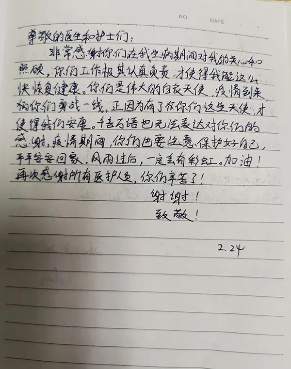

陪聊+画漫画，这群医护会“十八般武艺”
原文链接 备份链接 澎湃新闻记者 王选辉 实习生 刘宇丹 “我住院了，那我家猫怎么办？” “每天让我吃这个药，到底有没用？” 福建援鄂护理人画漫画鼓励患者。 来源：受访者提供 视频编辑：吴佳颖(01:06) 到湖北武汉后，陈晓欢才真实地感 …
澎湃新闻记者 邓雅菲 实习生 陈紫嘉
1月21日上午，武汉市第一医院呼吸与危重症医学科二病区的护士长芦丹接到医院通知，紧急成立该院收治新冠肺炎患者的呼吸与危重症五病区、六病区，担任护士长。
芦丹在一线要完成护理危重症病人、核酸检测采样、防护物资对接、患者和医护人员的饮食安排、新冠肺炎患者的遗体护理等工作。
芦丹告诉澎湃新闻，护理危重症患者的难度和压力都很大。“一位危重症病人的血氧饱和度只有70多而且不能进食”，芦丹冒着极大感染风险为该患者上胃管、尿管，由于持续高强度工作，她头晕目眩、胸闷气短，衣裤全部湿透。
此外，芦丹还需要特别关注危重症患者的心理状况，对于一位可能有轻生念头的患者，她协助患者与家人保持联系，建立患者战胜病魔的信心，令其重燃对生活的希望。

武汉市第一医院呼吸与危重症医学科二病区的护士长芦丹。本文图片均由受访者提供
芦丹的口述
24小时待命，护理危重症病人压力大
我作为护士长，在1月21日以后就一直在隔离病区里工作，24小时随时待命。
我每天早上都要进病房进行核酸检测的采样工作，然后看望所有的病人，给病人一些指导，保证治疗和护理效果，接着还要发放病人的一日三餐。我还要做好后勤工作，下午我经常和同事们一起，把防护物资一箱箱往科室里面搬。为了保障医护人员的衣食住行，也需要对接好大家的饮食和生活物资。到了晚上，我要依据病人和护士们的情况调整排班。
我们两个病区每天有近70名医护人员进出，为做好防护消毒隔离工作，我每天督促大家强化防护意识，规范穿脱防护服的流程，不规范的地方会一遍一遍指导。
防护物资的管理也是重中之重，区域标识、人员进出、定时消杀、防护更新的工作我也要去完成。庆幸的是，至今我们两个病区没有一个医护人员感染。
由于新冠肺炎患者的病房是无陪护病房，护理工作量比以前更大。我们不仅要像平常一样从事一些治疗，还要照顾病人的生活起居，而危重症患者的护理工作带来的压力就更大。
有一次，护理一位危重症病人，他当时因为血氧饱和度只有70多而且不能进食，如果再不上尿管和胃管可能就会有生命危险。但插管工作感染风险非常大，我们当时不仅穿了防护服，还加了一层隔离衣，戴了防护屏，整个上管的工作持续了30多分钟。
完成之后我觉得极度胸闷喘不过气来，头晕目眩，心率高达130次/分，衣裤全部湿透。
此外，帮助危重症患者建立信心也很重要。记得有一位病人刚来的时候不怎么说话，进食也非常少，言行举止异于常人。于是我电话联系病人家属，发现她在入院前把后事都和家人交代了才来，所以病人是比较焦虑和紧张的。
我们担心她会伤害自己，就把她身边的利器全都收起来了，每天吩咐护士多留意她的状态，关心和鼓励她。她刚来的时候电话连电都没有，我就给她充好电让她和家里人能打电话。由于她用的是老人机无法视频，我还加了她丈夫的微信，让他们能够视频。
两三天之后，她觉得自己胸闷症状也好一些了，开始感受到了我们对她的温暖和帮助，也对自己的治疗有了信心。刚来医院时，晚上她都不能入睡，我们给她用了镇静的药物，看她睡着了之后我们才敢安心地离开病房。
后来，那位患者精神状态好了很多，胃口也变好了，还开始了正常的交流，最后病人出院的时候对我们很感谢。
核酸检测采样工作中不为人知的细节
核酸检测的采样工作会因个人手法的不同而导致结果出现偏差。如果采集的上皮细胞不准确，有可能会出现假阴性或假阳性。

芦丹与同事相互加油打气。
为了保证采样工作的准确性，为诊断和治疗提供真实依据，我们决定对每位患者安排固定的医护人员采样。
我们采样的部位是咽后部，病人需要张开嘴巴来进行采样，这个时候是暴露最多的操作，感染风险很大。

每天早晨芦丹都要进行核酸检测的采样工作。
考虑到这个问题，我在科室最先开始了采样工作，因为我要把方法掌握好，并给大家做表率，告诉大家只要把防护做好，这个工作也没有那么危险，不需要过于紧张焦虑。
有的病人耐受力比较好，能够张开嘴部配合医护人员取样，但有的病人耐受力则较弱。我们把咽拭子擦到病人咽后部时，有的病人会反射性地恶心、呕吐和咳嗽甚至推开我们，这时候就会有很大的气体污染，增加大家的感染风险。还有的病人会持续长时间咳嗽，这时我们的取样就会有误差，需要重复采样。

芦丹准备穿防护服进仓。
采样之前，病人要先漱口，然后我们进行双人核对、贴标、取材、放置标本、手卫生、更换手套等工作，才能为下一个病人采样。平均一次采样需要3分钟，但遇到病人耐受力差，需要反复漱口、休息时则用时较长，我们最长的一次采样持续了10多分钟。
目前，我负责的两个病区已有120多名患者出院，在采样方面我已经有了比较丰富的经验。后期我们医院的外援队来的时候，我也对他们进行了采样培训，把我的经验方法和心得体会分享给他们。
独自完成科室第一例死亡的新冠肺炎患者遗体护理
2月15日下午2点45分，一位新冠肺炎患者在医院抢救无效宣告临床死亡，这是我们科室第一例死亡的新冠肺炎患者。
我们立即告知和安抚家属，并按照要求开具死亡证明，联系殡仪馆。
虽然我们以前也接触过遗体护理，但是新冠肺炎患者的遗体护理比起普通患者有更高的消毒要求，此外护理工作的传染性也比较强，有些年轻的护士比较担心和害怕。
作为护士长，我不希望她们有恐慌的情绪，所以我独自完成了这例新冠肺炎患者的遗体护理工作。
护理新冠肺炎患者遗体首先需要用3000mg/L的含氯制剂喷洒遗体，再用3000mg/L的含氯消毒剂棉球或纱布填塞病人的口、鼻、耳、肛门等所有开放通道。
对病人进行一些擦洗，更换干净的衣裤后，要用双层被含氯制剂浸湿的床单包裹遗体，或是用密封防渗漏双层遗体袋包裹遗体，遗体袋外层继续喷洒同等浓度的含氯制剂。
一小时前，患者还是活生生的在我面前，做遗体护理时，我也会感到很大的心理压力。我们在和病人接触的过程中也产生了感情，付出了很多心血，希望病人能被救治成功，遗憾的是，有的病人最终还是去世了。
在普通遗体的护理过程中，我们会把患者身上的管道都拔掉，帮他们擦洗身体，换上整洁的衣服，让他们能够安详、有尊严地被送走。
但一想到新冠肺炎患者离开时口腔等开放通道里要塞满含氯消毒剂的棉球，身上还裹着被含氯制剂浸湿的床单，我内心也感到很难过。
记得在护理第一例因新冠肺炎死亡的患者的遗体之前，我很心痛，对她说：“奶奶您一路走好，我送您最后一程。”
离家一个半月，家人帮助解决后顾之忧
自1月21日起我就没有回过家，医院就是我的家。
我离开家时其实连告别的机会都没有。1月21日上午，我去上班时还不知道自己会有很长一段时间不能回家了。
那天一早接到通知成立呼吸与危重症医学科六病区，中午就开始转移病人，下午把仪器设备都转移到另一个科室，开始收治病人，直到晚上10点才把工作做完。
我13岁的儿子正在上中学，学校的老师知道我是一线的医护人员，就对孩子特别照顾，上网课的时候很关心他。有一次，老师组织了一个一线医护人员子女分享故事的班会，我儿子写了一篇名叫《我的天使妈妈》的作文在班会上念，“希望战役结束后，妈妈可以早点回来”。
那时，我才知道他还是很舍不得妈妈，只是作为男孩子，他可能不太好意思直接向我表达。我跟他说，“妈妈要让这边的病人都安心、健康的出院，然后妈妈就可以回来。”
家里还有个2岁的小女儿，由我的家人们一起照顾，他们为我解决了很多后顾之忧，让我能放心在一线战斗。

患者在留言本上写下对医护人员的感恩与祝福。
截至3月1日，两个病区出院人数已达120人，很多患者出院时在留言本上写下了感激的话语。
有一位患者写道：“非常感谢你们在我生病期间对我的关心和照顾，你们工作极其认真负责，才使得我能这么快恢复健康。你们是伟大的白衣天使，疫情到来，你们勇战一线，正因为有了你们这些天使，才使得我们安康。千言万语也无法表达对你们的感谢，疫情期间，你们也要注意保护好自己，平平安安回家。风雨过后，一定会有彩虹。加油！再次感谢所有医护人员，你们辛苦了！”
看到这些充满感恩的话语，我们也觉得这一个多月的辛勤付出都是值得的。
2月28日，医院呼吸与危重症医学科五病区的病人开始陆续全部转移到呼吸六病区，现在两个病区合成了一个病区，病人数由80减到20多名。我们已经度过了最艰难的时候，我想，这次抗击新冠肺炎战役的胜利就在前方了。
本期编辑 邢潭
推荐阅读


原文链接 备份链接 澎湃新闻记者 王选辉 实习生 刘宇丹 “我住院了，那我家猫怎么办？” “每天让我吃这个药，到底有没用？” 福建援鄂护理人画漫画鼓励患者。 来源：受访者提供 视频编辑：吴佳颖(01:06) 到湖北武汉后，陈晓欢才真实地感 …
原文链接 备份链接 龙华医院、市中医医院接管的C5病区46位患者，经中医治疗后，大多数患者第一次新型冠状病毒核酸检测结果已呈阴性，其中，最严重两例危重病患者采用“截断扭转”防治策略，一例患者趋于痊愈，另一例病情较前明显好转。 记者 | …
原文链接 备份链接 “彭主任，急诊室一个31岁的新冠肺炎病人心脏骤停了，您快来看看，要不要转入ICU。” 2月4日晚上7点半，武汉大学中南医院重症医学科（ICU）主任彭志勇刚从湖北天门考察疫情回到办公室，和财新记者聊了不到十分钟，就 …
原文链接 备份链接 澎湃新闻记者 汤琪 国家卫健委专家组成员、北京地坛医院感染科主任医师蒋荣猛。澎湃新闻记者 汤琪 图 3月5日下午，北京支援武汉医疗队在武汉协和医院西院区举行京汉两地远程重症病例讨论，交流重症患者救治和医院感染工作经验。 …
原文链接 备份链接 *************▲************* 2020年2月22日晚，武汉市金银潭医院，医护夫妇涂盛锦(左)和曹珊“以车为家”。 （新华社/图） 全文共10527字，阅读大约需要22分钟。 这里发生的许多事 …